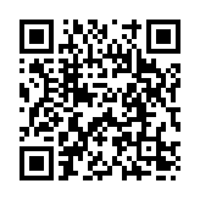

NICOLE ENCAJES
¿Necesitas factura?
Escanea este QR y registra tus datos con tu celular.

¡Sin contraseña y en pocos pasos!
https://jeffer91.github.io/facturas-nicole/Nicole Encajes gestionará la factura después de tu compra.
NICOLE ENCAJES
Escanea este QR y registra tus datos con tu celular.

¡Sin contraseña y en pocos pasos!
https://jeffer91.github.io/facturas-nicole/Nicole Encajes gestionará la factura después de tu compra.